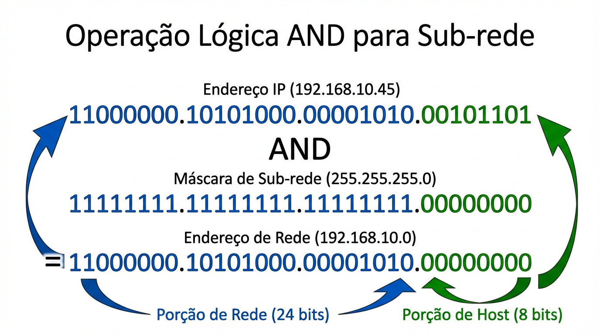

Aula 05
IPv4
Como a máscara funciona (visão de bits)
Operação AND entre IP e máscara para obter o endereço de rede
Regra • bits 0 da máscara “zeram” o host
Endereço de rede = IP AND máscara
A operação AND é feita bit a bit: o resultado é 1 apenas quando ambos os bits são 1.
Bits de rede
Na máscara, são 1 e “preservam” o prefixo.
1 AND x = x
Bits de host
Na máscara, são 0 e “zeram” a porção de host.
0 AND x = 0
Interpretação rápida
Se a máscara é /24, então os 24 primeiros bits determinam a rede. A operação AND “apaga” os últimos 8 bits (host), produzindo o endereço de rede.
Entrada do cálculo
IP e máscara em binário (mesmo tamanho: 32 bits)
IP AND máscara → rede
Exemplo (bit a bit)
Rede em azul • Host em verde

IP
192.168.10.45
Máscara
255.255.255.0
Rede (resultado)
192.168.10.0
Conclusão
O AND “mantém” a rede e zera o host, gerando o endereço da rede.
Use isso para calcular rede/broadcast
Conectando com o próximo tópico:
A partir do endereço de rede, calculamos broadcast e faixa de hosts.
FATESE • ADS • Redes de Computadores